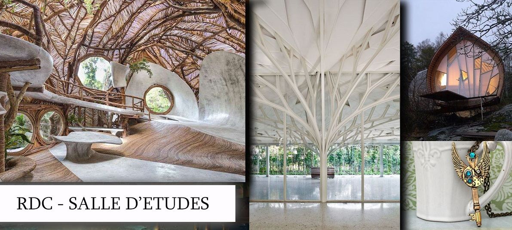

LES 8 POLES D'ACTIVITES

- ALIMENTATION - fermes de permaculture, épiceries bio, producteurs locaux, restaurants vegan (accès forum "Semences d'Espoir")
- HABITAT - éco-constructions, énergies durables, mobilier responsable, communautés conscientes (accès forum "Artisans de Lumière")
- SANTE - ères protégées, observatoires, centres d'études, communication animale (accès forum "Gardiens de la Biodiversité")
- ENVIRONNEMENT - enseignements alternatifs, sciences de l'Ascension (accès forum "Enseignants de l'Un")
- ENSEIGNEMENT - informatique, ingénierie noble, transports écologiques (accès forum "Ingénieurs du Prestige")
- TECHNOLOGIE - médecines douces, centres de soins, activités sportives, bien-être (accès forum "Ames Guérisseuses")
- GESTION - financements participatifs, règlementations, bureaux de comptabilité, justice, politique (accès forum "Gestionnaires d'Avenir")
- ART - chanteurs, compositeurs, peintres, créateurs de mode ethiques (accès forum "Etoiles Créatrices")
Pôle Alimentation
médecine multidimentionnelle, corps, chakras, biologie, anatomie
- Agroécologie
- Livres
- Forêts potagères
Pôle Habitat
- Ecolieux
- Stages de construction
- Energies renouvelables
Pôle Santé
- Méditation
- Cercles de paroles
- Centres de soin et bien-être
Pôle Environnement
- Mouvement de protection
- Magazines
- Groupements et collectifs
Pôle Enseignement
Etude des consciences végétales : dryades, plantes mères, arbres, arbustes, plantes, fleurs, herbes, algues, champignons, mousses et lichens
- Web-TV
- Bibliographie
- Ecoles spécialisées
Pôle Technologie
gemmes, pierres précieuses, roches, métaux, minéraux, gaz, météorites, roches volcaniques
- Informatique
- Electroménager
- Transport
Pôle Justice-Gestion
Etude des consciences végétales : dryades, plantes mères, arbres, arbustes, plantes, fleurs, herbes, algues, champignons, mousses et lichens
- Compatibilité
- Assemblée
- Justice
Pôle Art
gemmes, pierres précieuses, roches, métaux, minéraux, gaz, météorites, roches volcaniques
- Chant et musique
- Photographie
- Groupements et associations